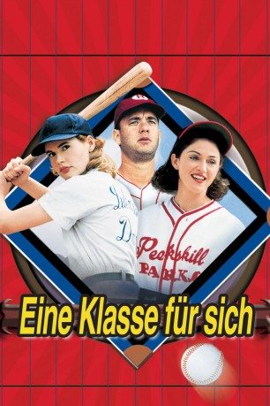

#5774 Eine Klasse für sich
Alternativ: A League of Their Own
 
 IMDB-Wertung: 7.2 / 10
IMDB-Wertung: 7.2 / 10  Metascore: 0
Metascore: 0 
Die Geschwister Dottie und Kit werden 1943 für die erste weibliche Baseball-Liga entdeckt. Zuerst ernten die Damen vom überwiegend männlichen Publikum nichts als Spott. Das ändert sich, als Dottie, Kit und Co. ihre weiblichen Reize gepaart mit Ideenreichtum und Einsatz in den Dienst der Sache stellen. Dennoch steht Ärger ins Mäderlhaus: Kit kann es nicht verkraften, daß ihre besonnene Schwester Dottie wieder einmal populärer ist als sie.
Jahr: 1992
Dauer: 127 Minuten
FSK: 12
Land: USA Studio: Columbia PicturesTonspuren: DD2.0 - ,
Untertitel: Deutsch,
Auflösung: 1080p (1920x800) Größe: 7208 MB
Genre: Drama, Komödie, Familie, Sport
Regisseur:  Penny Marshall
Penny Marshall
Drehbuch: Nana Meyer
Soundtrack:
Darsteller:
 Tom Hanks als Jimmy Dugan
Tom Hanks als Jimmy Dugan Geena Davis als Dottie Hinson
Geena Davis als Dottie Hinson- Lori Petty als Kit Keller
 Madonna als Mae Mordabito
Madonna als Mae Mordabito Rosie O'Donnell als Doris Murphy - 3rd Base
Rosie O'Donnell als Doris Murphy - 3rd Base Megan Cavanagh als Marla Hooch - 2nd Base
Megan Cavanagh als Marla Hooch - 2nd Base Tracy Reiner als Betty 'Betty Spaghetti' Horn - Left Field
Tracy Reiner als Betty 'Betty Spaghetti' Horn - Left Field- Bitty Schram als Evelyn Gardner - Right Field
 Ann Cusack als Shirley Baker - Left Field
Ann Cusack als Shirley Baker - Left Field- Anne Ramsay als Helen Haley - 1st Base
- Renée Coleman als Alice Gaspers - Left Field / Center Field
 Kathleen Marshall als 'Mumbles' Brockman - Outfield
Kathleen Marshall als 'Mumbles' Brockman - Outfield David Strathairn als Ira Lowenstein
David Strathairn als Ira Lowenstein Garry Marshall als Walter Harvey
Garry Marshall als Walter Harvey Jon Lovitz als Ernie Capadino
Jon Lovitz als Ernie Capadino Bill Pullman als Bob Hinson
Bill Pullman als Bob Hinson Eddie Jones als Dave Hooch
Eddie Jones als Dave Hooch- Alan Wilder als Nelson
 Don S. Davis als Charlie Collins, Racine Coach
Don S. Davis als Charlie Collins, Racine Coach- Janet Jones als Racine Pitcher
 Téa Leoni als Racine 1st Base
Téa Leoni als Racine 1st Base Robert Stanton als Western Union Man
Robert Stanton als Western Union Man- Joe Krowka als Heckler
 Harry Shearer als Newsreel Announcer
Harry Shearer als Newsreel Announcer- Blaire Baron als Margaret
- Ellie Weingardt als Charm School Instructor
 Joey Slotnick als Doris' Fan #2
Joey Slotnick als Doris' Fan #2 Rae Allen als Ma Keller
Rae Allen als Ma Keller Gregory Sporleder als Mitch Swaley
Gregory Sporleder als Mitch Swaley- Eddie Mekka als Mae's Guy in Bar
 Stephen Mailer als Kit's Guy in Bar
Stephen Mailer als Kit's Guy in Bar- Kathleen Butler als Older Kit
- Eunice Anderson als Older Mae
- Mark Holton als Older Stilwell
- Barbara Pilavin als Older Helen
- Clint Calvert als Baseball fan with boy , uncredited
 Gary Houston als Ray Foster , uncredited
Gary Houston als Ray Foster , uncredited David L. Lander als Radio Sportscaster , uncredited
David L. Lander als Radio Sportscaster , uncredited- Megan McCarthy als Ballplayer , uncredited
- Ray Toler als Loudmouth from Lukash , uncredited
- Freddie Simpson als Ellen Sue Gotlander - Shortstop / Pitcher
- Robin Knight als 'Beans' Babbitt - Shortstop
- Patti Pelton als Marbleann Wilkenson - 2nd Base
- Kelli Simpkins als Beverly Dixon - Outfield
- Neezer Tarleton als Neezer Dalton - Outfield
- Connie Pounds-Taylor als Connie Calhoun - Outfield
- Sharon Szmidt als Vivian Ernst - 2nd Base
- Pauline Brailsford als Miss Cuthbert
- Justin Scheller als Stilwell Gardner
- Michael Haley als Empathetic Umpire
Datei: X:\1992\Klasse für sich, Eine (1992, FSK12, 1920x800).mkv seit 20.03.2017
Festplatte: HD 1992-1995
 Es gibt insgesamt 57 Filme in der Gruppe '1992'
Es gibt insgesamt 57 Filme in der Gruppe '1992'